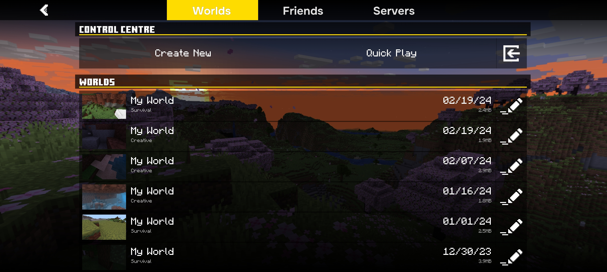
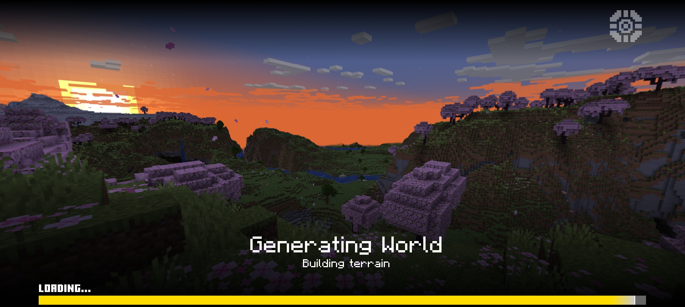
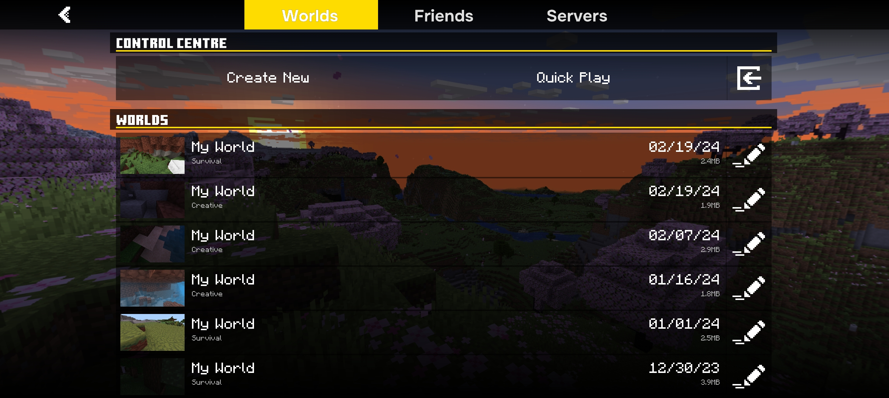
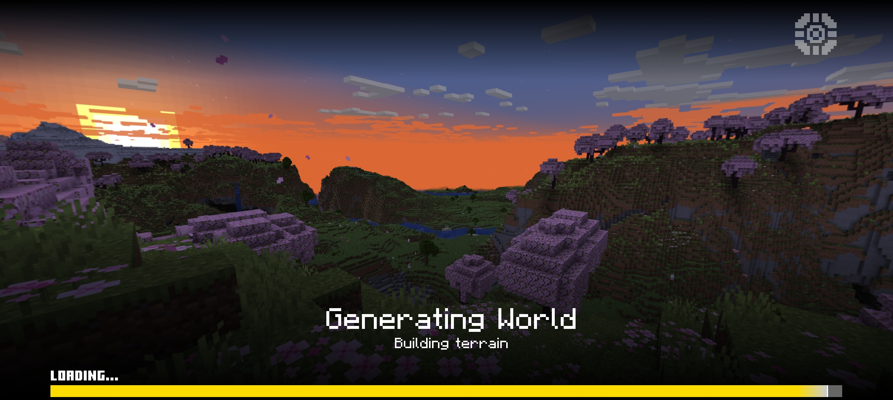

Collapse-UI is basically, Arcdustry-UI but completely rewritten. well, some are ported of course since some are optimized and rewriting may result the same code anyways.
It's initial v1.0 release, so nothing new here that much. but, I'll keep updating alongside with side projects.
What's New?
- 10% Faster than Vanilla UI due to the code not being reused from vanilla.
- UI with customizations/theme available in
- New optimized look and better support on all devices
- New death screen
- New UI look, with more complete simple dark mode (you can make it uh, light mode via theme config lmao)
- Adjusted alot of layouts to match the current vanilla layout.
- World selection screen now has more "compact" look. e.g some detail text are smaller and gray.
- World selection screen now has more "compact" look. e.g some detail text are smaller and gray.
- Bought DEVAMPED's modified HUD and there
- Loading screen bar now actually uses theme aswell new progress bar from scratch!
- Available modified screen : Start screen, Play screen, Loading screen, Pause screen, Death screen and Hud screen.
 





Last update: Tue Feb 19, 2024 | 2:50(am) GMT+7:00
>> - Modify, changes and create for personal use.
>> - Learn or study the way code works
>> - Make an showcase or review on social media platforms. *
>> - Use the pack on a local world or realm with your friends. *
* Credit is appreciated, but are optional and are not be required.
>> - Create any external links for this pack. (e.g - shortcut links, or anything that monetize) Please link to official download websites like Github, PlanetMinecraft, MCPEDL and official devamped website.
>> - Redistribute this pack to another website without permissions
>> - Use any contents of this pack as commercial purposes or mixing with packs
>> - Claiming that the pack is yours